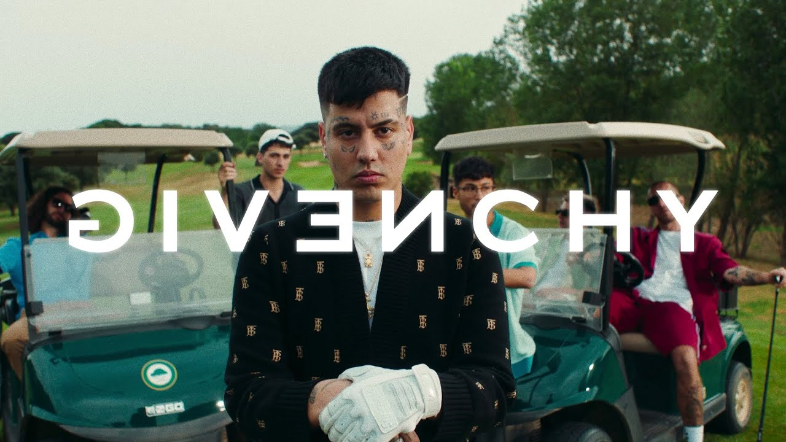

Duki
Givenchy, 21 jul 2022
Mauro Ezequiel Lombardo Quiroga (Almagro, Buenos Aires, 24 de junio de 1996), conocido artísticamente como Duki, es un rapero y compositor argentino. Es reconocido por haber popularizado el género del trap en la música mainstream hispanohablante a fines de la década de los 2010, y por su utilización del autotune en sus vocales y sus ganchos melódicos en su estilo de rapeo.
Tras romper su relación con Varela, en 2019 Lombardo lanzó su álbum de estudio debut, Súper sangre joven, de manera independiente, a través de su propio sello discográfico de nombre homónimo. El álbum fue certificado platino en Argentina, y fue seguido por 24, un EP, en 2020. En 2021 publicó su segundo álbum de estudio, Desde el fin del mundo, el cual alcanzó el puesto número 1 en álbumes digitales en Argentina, y también fue certificado platino.
Fue nominado por su sencillo «Goteo» y su colaboración en el álbum YHLQMDLG del puertorriqueño Bad Bunny en la canción «Hablamos mañana» para los premios Grammy Latinos 2020. Fue el artista argentino más escuchado en el mundo en Spotify durante 2021, según la revista Rolling Stone.
Este cantante también es famoso por participar y organizar eventos de rap en argentina como el Quinto Escalón donde se dieron a conocer algunos de los cantantes argentinos más famosos de la actualidad como Ysy A o Paulo Londra.